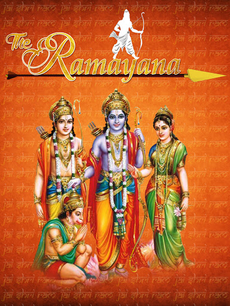

Ramayana (Sanskrit: रामायणम्), Rāmāyaṇam is one of the two major Sanskrit epics of ancient India, the other being the Mahābhārata. Along with the Mahābhārata, it forms the Hindu Itihasa.
There have been many attempts to unravel the epic's historical growth and compositional layers; various recent scholars' estimates for the earliest stage of the text range from the 7th to 4th centuries BCE, with later stages extending up to the 3rd century CE
The epic, traditionally ascribed to the Maharishi Valmiki, narrates the life of Rama, the legendary prince of the Kosala Kingdom. It follows his fourteen-year exile to the forest by his father King Dasharatha, on request of his step-mother Kaikeyi. His travels across forests in India with his wife Sita and brother Lakshmana, the kidnapping of his wife by Ravana, the great king of Lanka, resulting in a war with him, and Ram's eventual return to Ayodhya to be crowned king. This is the culmination point of the epic. It is the most sacred book, and is read by millions of people every year.
The Ramayana is one of the largest ancient epics in world literature. It consists of nearly 24,000 verses (mostly set in the Shloka/Anustubh meter), divided into six Kands (Adi (Bala) Kand, Ayodhya Kand, Aranya Kand, Kishkindha Kand, Sundara Kand, Lanka Kand) and about 500 sargas (chapters). Uttar kand which is also read today in ramayan is a part of kakbhusundi garud samvad and is not a part of original valkimi ramayan. In Hindu tradition, it is considered to be the Adi-kavya (first poem). It depicts the duties of relationships, portraying ideal characters like the ideal father, the ideal servant, the ideal brother, the ideal husband and the ideal king. Ramayana was an important influence on later Sanskrit poetry and Hindu life and culture. Like Mahabharata, Ramayana presents the teachings of ancient Hindu sages in narrative allegory, interspersing philosophical and ethical elements. The characters Rama, Sita, Lakshmana, Bharata, Hanuman, and Ravana are all fundamental to the cultural consciousness of the South Asian nations of India, Nepal, Sri Lanka, and the South-East Asian countries of Thailand, Cambodia, Malaysia, and Indonesia.
There are many versions of Ramayana in Indian languages, besides Buddhist, Sikh, and Jain adaptations. There are also Cambodian, Indonesian, Filipino, Thai, Lao, Burmese, and Malaysian versions of the tale.
You may get to know more Here
credits: wikipedia